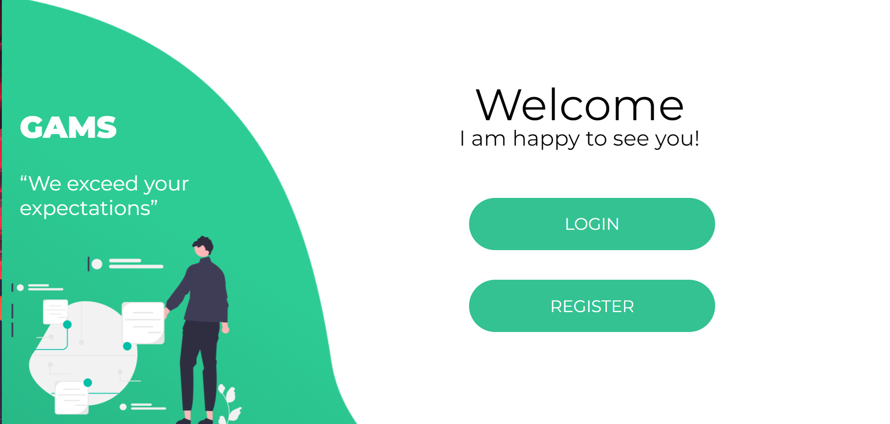
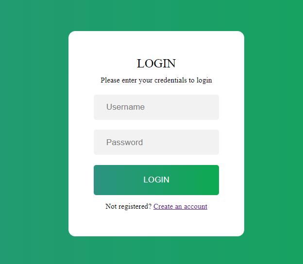
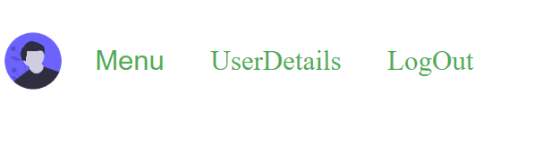
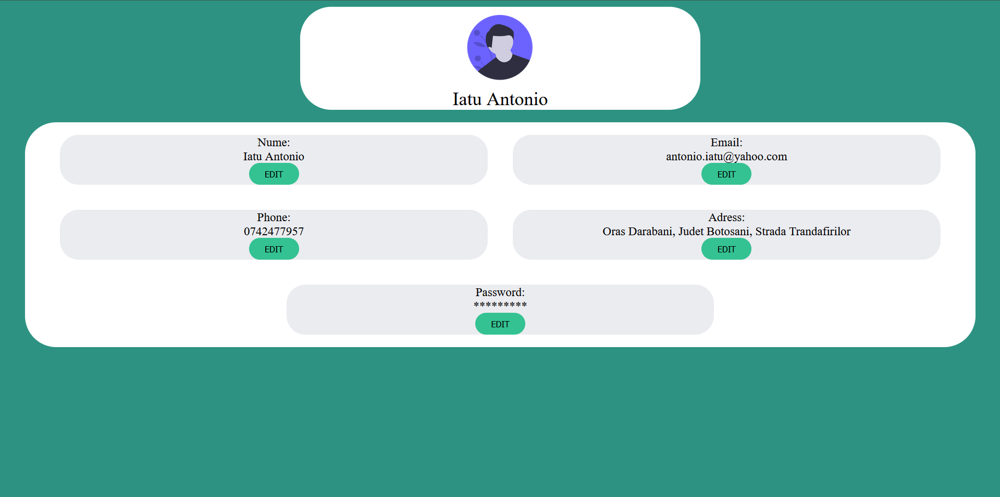
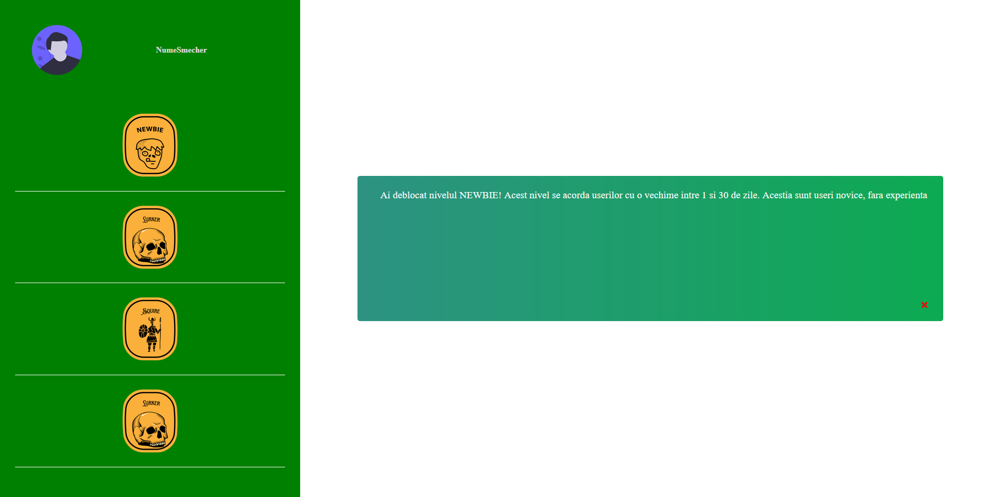

Cuprins
1.Introducere
1.1Scop
Aplicatia se numeste Gamification-as-a-Service. Acest serviciu va fi folosit pentru a "contoriza" activitatea unei persoane pe diverse site-uri si oferind diverse achievement-uri (badges or levels).
1.2 Conventiile documentului
Acest document este divizat in 4 mari parti printre care se numara: cuprinsul(unde sunt enumerate celelalte parti), descrierea generala(explicare a functionalitatilor proiectului+mediul de functionare) precum si cerintele externe pentru interfata. Fiecare dintre aceste sectiuni este subdivizata in cateva mai mici, unde se detaliaza mai amplu fiecare aspect al temei abordate.(folosind inclusiv metoda vizuala)
1.3Publicul vizat
Publicul vizat de catre aplicatia noastra sunt acei proprietari de site-uri ce doresc
sa isi recompenseze userii antrenati in utilizarea acestora. In acest mod, ei vor reusi sa atraga atentia utilizatorilor
si sa ii motiveze sa foloseasca mai mult site-ul. Astfel, scopul aplicatiei noastre web este oferirea de valoare proprietarilor de site-uri.
1.4 Domeniul de aplicare al produsului
Aplicatia nostra este un serviciu ce pune la dispozitie utilizatorului o modalitate de recompensare a timpului petrecut pe site-uri de catre utilizatorii pe care acesta ii are la randul sau pe site. In urma conectarii in aplicatie utilizatorul va avea posibilitatea sa verifice care este evolutia site-urilor adaugate de el. Aceasta evolutie va fi data de badge-uri sau de nivele (depinde de cum a dorit utilizatorul sa isi configureze serviciul). Acesta mai are si posibilitatea de a-si vizualiza si edita datele existente in aplicatie.
Aplicatia noastra web poate fi folosite prin urmare de majoritatea proprietarilor de site-uri web care doresc sa ofere un mediu atractiv pentru utilizatorii lor.
2.Descriere Generala
2.1Perspectiva
Acest proiect este un proiect scolar, in cadrul materiei Tehnologii Web. Acest serviciu poate fi implementat de orice website.
2.2 Functiile
Clientul care utilizeaza serviciul poate adauga site-ul pentru care doreste sa il utilizeze.Isi poate creea propriile badge-uri sau nivele , le poate edita oricand dupa autentificare.
2.3 Utilizatori
Utilizator poate fi oricine doreste sa adauge o nota de interactivitate propriului site prin implementarea unor elemente specifice jocurilor.
2.4 Mediu de operare
Aplicatia noastra va rula pe sistemul de operare Linux. Se va folosi PHP pe partea de server, de asemenea SQL pentru operatiile asupra bazei de date.
2.5 Constrangeri
Avand in vedere faptul ca aces proiect , este unul scolar , pentru implementare se ragasesc unele constrangeri privind framework-urile de javascript , utilizarea PHP-ului, recurgerea la anumite modele pentru design-ul aplciatiei.
3.Cerinte externe pentru interfata
3.1Interfete de utilizator
Pe prima pagina a aplicatiei vor aparea 2 optiuni :Login si Register.
Pentru logare este nevoie de un cont existent de tip username-password .
La crearea contului se cer urmatoarele informatii: username, parola , email , numar de telefon si adresa.

Dupa logare , se deschide pagina UserHome , in care se gasesc site-urile deja introduse si butonul pentru a adauga un alt site.In aceasta pagina si in urmatoarele , in stanga sus se afla avatarul si meniul.

Meniul are urmatoarele optiuni: butonul care duce la detaliile utilizatorului si deconectare.
Cand dorim sa adaugam un alt site ,dupa apasarea butonului Add Site se va deschide o fereasta in care avem optiunea sa alegem daca dorim Badge-uri pentru site sau Nivele. Dupa ce alegem una din optiuni se deschide un formular corespunzator.Pentru Badge-uri trebuie trecut Numele si evenimentul iar pentru Nivel trrebuie introduse numarul de puncte pentru realizarea nivelului si actiunile prin care se cumuleaza puncte.
Pentru fiecare formular exista butoanele de Add si Remove , care adauga un nou Badge/Nivel pentru care sa completam datele , respectiv sterge ultimul camp adaugat.
Putem accesa si pagina ce contine detaliile utilizatorului si de unde le putem si modifica.
Pentru un site deja existent , putem vedea ce badge-uri/ nivele exista deja.
4.1 Alte cerinte
Ceea ce am reusit sa realizam pana acum este doar un inceput, si vom continua sa adaugam pe parcurs alte functionalitati, si imbunatatiri de design, poate si mai multe size-uri de ecrane pentru o compatibilitate si mai mare.